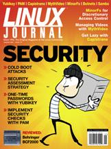

Shutdown Archive web server
Search:
Linux Journal
Issue #177/January 2009

Features
Yubikey
by Dirk Merkel
Learn how to increase system and on-line security.
Cold Boot Attack Tools for Linux
by Kyle Rankin
Use open-source tools to dump and scan RAM from a target system for encyption keys and other goodies.
PAM—Securing Linux Boxes Everywhere
by Federico Kereki
How to implement Linux security checks.
Testing the Locks: Verifying Security in a Linux Environment
by Jeramiah Bowling
Four checks for a more secure network.
Indepth
MinorFs
by Rob Meijer
A set of user-space filesystems for enhanced discretionary access control.
Detecting Botnets
by Grzegorz Landecki
Using Darknet to secure environments from threats in the wild.
MythVideo: Managing Your Videos
by Michael J. Hammel
Too many videos in your MythTV menu? With a little planning, finding your favorite movies can be a breeze
Using Capistrano
by Dan Frost
Simplify application deployment.
Columns
Reuven M. Lerner's At the Forge
Memcached Integration in Rails
Marcel Gagné's Cooking with Linux
Evil Agents under the Bed and Other Scary Things that Go Boom!
Dave Taylor's Work the Shell
Special Variables I: the Basics
Mick Bauer's Paranoid Penguin
Samba Security, Part III
Kyle Rankin's Hack and /
Manage Multiple Servers Efficiently
Kyle Rankin and Bill Childers' Point/Counterpoint
Small Laptops vs. Large Laptops
Doc Searls' EOF
The Power of Definitions
Review
Mixing It Up with the Behringer BCF2000
by Dan Sawyer
In Every Issue
Letters
UPFRONT
New Products
New Projects
Archive Index
Shutdown Archive web server
Search:
Copyright © 1994 - 2018
Linux Journal
. All rights reserved.